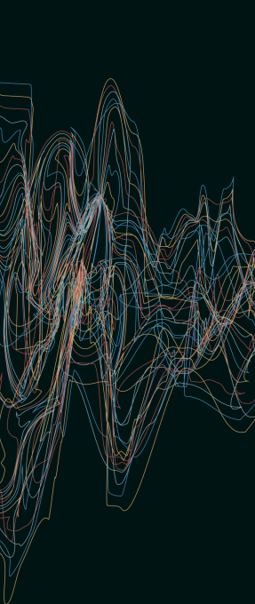
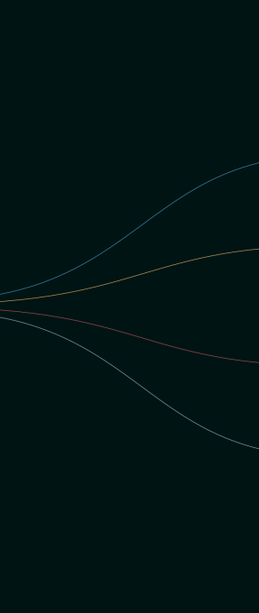

We are a non-profit that partners with state
criminal justice agencies to advance their
use of data and reduce incarceration.
1
intake an
agency’s
disjointed data
2
deploy tools for
all levels of
decision making
3
improve
outcomes for
justice-impacted
individuals
A human–centered definition of success.
Our approach is shaped by the perspective and experience of
people impacted by the justice system. Together, we are focused
on restoring equity and supporting success in the community.


See the forest and the trees.
The criminal justice system can't support safe, whole communities without
feedback on what’s working and what’s not. We stitch together data from
fragmented systems to provide decision-makers with the information they
need to improve outcomes. With this data, we surface opportunities to safely
chart a path to a smaller system, and to track the impact of policy and practice changes over time.

feedback on what’s working and what’s not. We stitch together data from
fragmented systems to provide decision-makers with the information they
need to improve outcomes. With this data, we surface opportunities to safely
chart a path to a smaller system, and to track the impact of policy and practice changes over time.